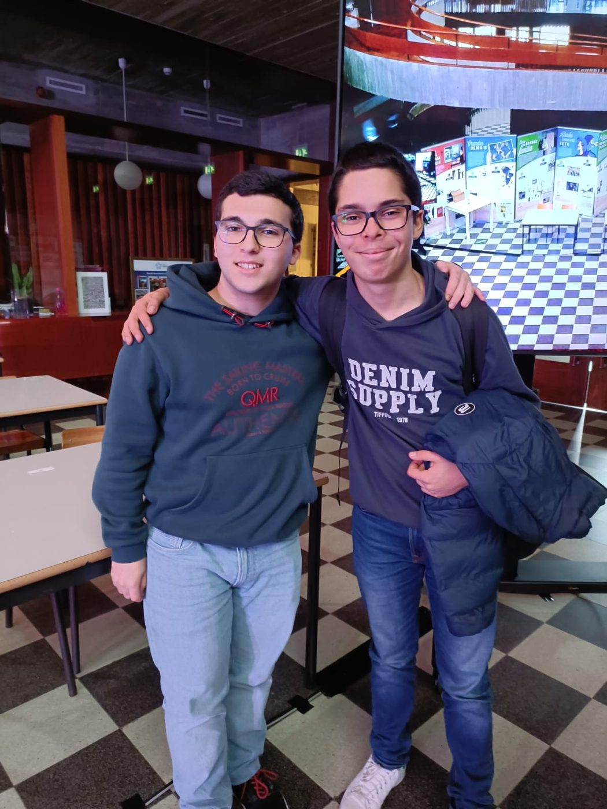
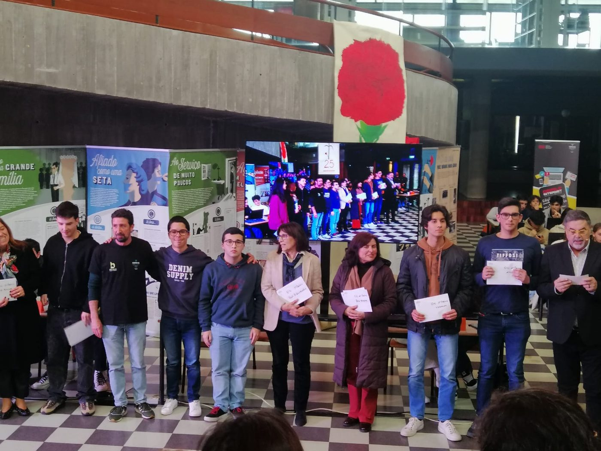
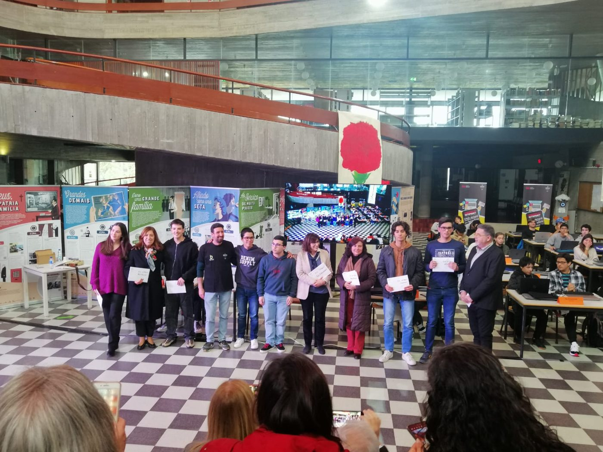
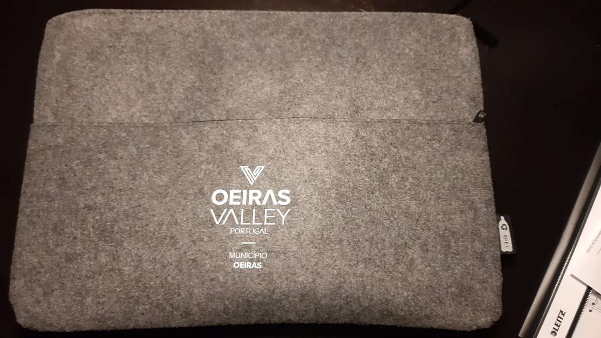
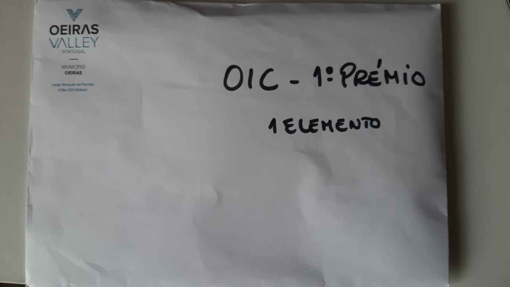
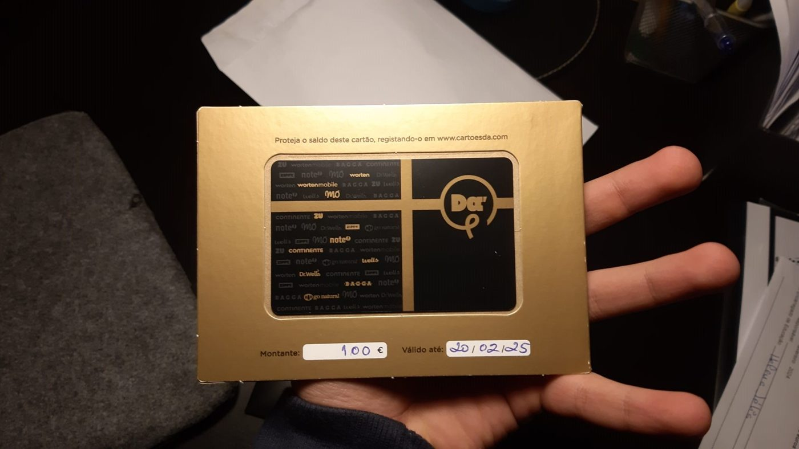
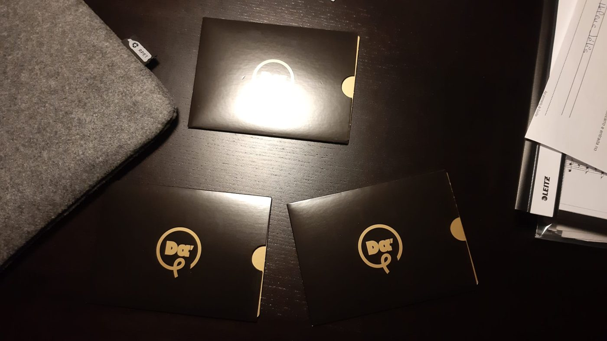
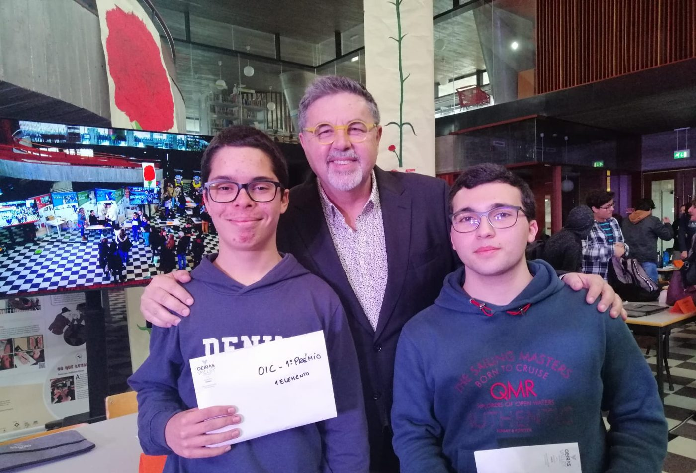
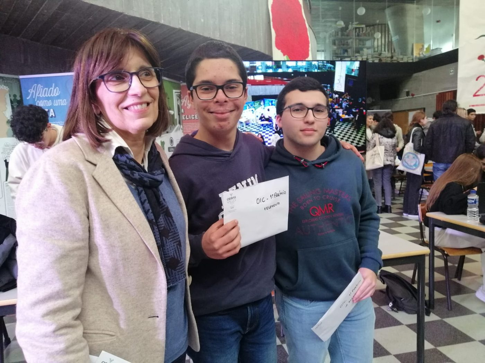
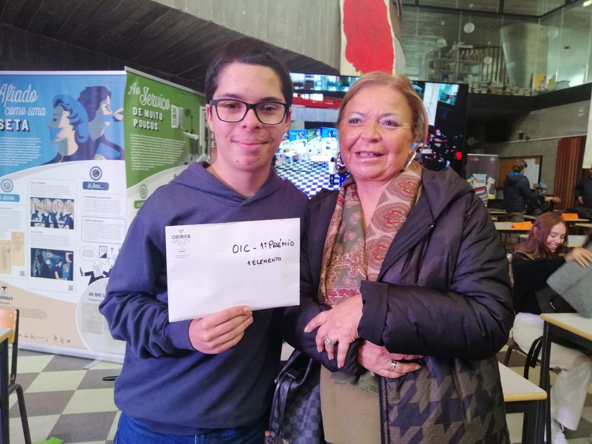

1.º lugar — Oeiras Internet Challenge 2023/2024
Fase nacional · Escola Secundária Luís de Freitas Branco, Oeiras · 2 de março de 2024
Em dupla com o João Assunção, venci a fase nacional do «Oeiras Internet Challenge», uma competição promovida no âmbito da Rede de Bibliotecas Escolares que avalia técnicas de pesquisa, obtenção e verificação de informação. Começámos por vencer, com alguma facilidade, a fase de seleção interna da nossa escola, no 1.º período do 11.º ano — e foi nesse momento que assumi uma mentalidade de vencedor: íamos ficar em primeiro lugar. Treinámos com os kahoots oficiais da RBE, aprimorando velocidade, análise e coordenação, até conquistar a vitória na final nacional, a 2 de março de 2024. A vitória foi publicada pela Rede de Bibliotecas Escolares e pelo Município de Oeiras. A paixão pela tecnologia que esta competição reforçou levou-me a frequentar hoje Engenharia Informática e de Computadores, no Instituto Superior Técnico.









